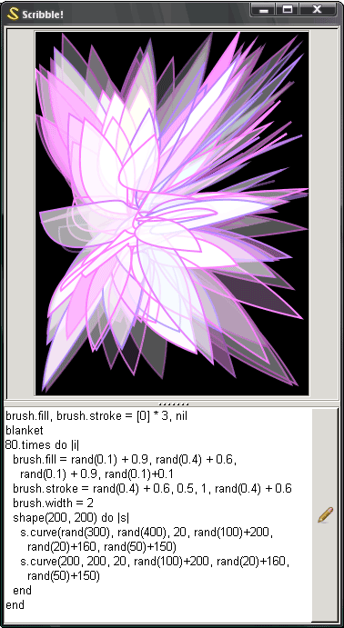

Shapes and Colors for Ruby
May
6th
01:10

Looks like the infectious hacking spirits are really sinking their teeths in!! Nathan W started cobbling together a NodeBox-alike for Ruby using Cairo and it’s really coming along.
Good use of blocks to start shapes, Nathan. You start a shape with shape(x, y) and attach a block that lets you further the shape with the line, jump and curve methods. I really like how the block houses the complete shape outline.
So, to get this up and running you need GTK2, Cairo and the Ruby bindings for both. On Windows, you can get the Ruby-Gnome2 installer, which includes all of that. Good show, Nathan.
Hackety.org is for artful computer hacking. Hobbyists & amateurs welcome. Business trends and language wars? None for us, thankyou! More.

Elsewhere
- Shoes
the Ruby app toolkit - Hackety Hack
the coder's starter kit - Try Ruby!
a hands-on tutorial
Peter
When will something like this appear inside HH? :)
Kiddo
it would be cool if the brush fill colors were words like GREEN and RED and we should be able to do GREEN+BLUE and pass that to the brush.fill command.
Nathan
Peter: Soon, hopefully. I tried to structure it so that it would be easily embeddable in HH.
Kiddo: I just committed a version where you can set brush colors by name. They aren’t addable, because I wanted to have them settable with symbols.
misuba
Now can we combine this with LittleCoder somehow?
nertzy
The site talks about some “Why the lucy stiff”! Is this your female counterpart?
Klondike
Nathan, perhaps you could define the + method on symbols, to control what mixing certain colors with others would produce. Could be neat.
Nathan
Heehee…
:red + :green #=> :yellow. Yeah, that’s a good idea.weepy
Nathan, if you could do something like the color operators in Sass that would be great
Vagabond
Sorry for the long snippet, but adding symbols as colors kinda inspired me a little:
Comments are closed for this entry.